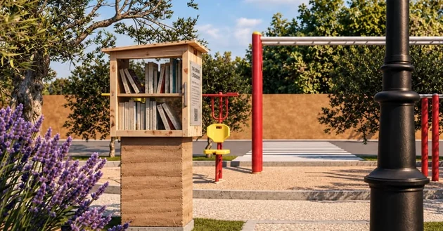

The Urban Librarian.
Una iniciativa de arquitectura urbana que busca acercar la lectura, la cultura y el intercambio de ideas a los espacios cotidianos de nuestra ciudad.

- Tipo
- Biblioteca comunitaria
- Ubicación
- Corregidora, Querétaro, México
- Fecha
- 29 de octubre de 2026
- Material
- Madera recuperada de obra
- Estado
- En desarrollo
- Proceso
-
- Idea
- Transformación
- Materia
Idea
The Urban Librarian es una pequeña biblioteca comunitaria, construida a partir de madera recuperada de obra, donde cualquier persona podrá tomar un libro, dejar otro y compartir historias.
Más que un elemento de mobiliario urbano, buscamos crear un punto de encuentro entre las personas y la cultura, demostrando que incluso las intervenciones más pequeñas pueden transformar la manera en que habitamos y compartimos nuestros espacios.
Esperamos que este proyecto crezca a través de la participación de la comunidad, que los libros encuentren nuevos lectores y que esta primera intervención sea el inicio de muchas más.



Porque creemos que la arquitectura alcanza su mayor valor cuando deja de hablar de edificios y comienza a hablar de personas.